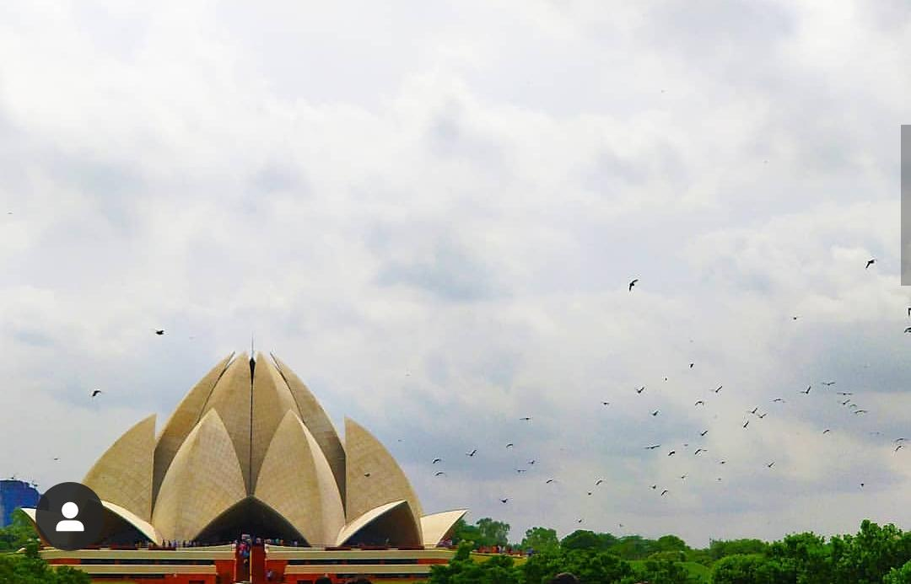

Read our blog
#1. Lotus Temple
The lotus temple is made up of 10,000 differet sizes of marbles,which makes the buildig visible from a distace and highlight with sunlight,turning it purple at sunset.

Lotus Temple is a notable architectural marvel famous for its unique lotus structure. The temple has won several awards and recognitions for its style of building, the concept of religion and the beauty. It is one of the most visited monuments in the world. This is a modern style non-religion oriented temple.
The temple controls 27 marble petals that form clusters to look like lotus. There are nine openings to the temple in regards to the nine anatomical openings of a human body. Lotus temple preaches Baha I Faith, a concept that includes all religions of the world as one. A person of any religion or creed can visit the temple and take part in the rituals. No religious script is allowed inside the temple. No lectures, sermons or spiritual meetings are allowed inside the temple. Musical prayers are conducted by instruments from time to time. The temple holds no pictures or statues of any worship form. There is no altar or platform inside the temple. The temple can hold more than 2,400 people at the same time. The surface of the temple is made of white marble imported from Greece. The temple is surrounded by nine ponds and gardens covering 26 acres in total. There is an information center inside the complex, which holds paintings that explains the unity of all religions. The temple hosts several classes from time to time to spread humanity, peace, affection, truth and courage. A short film explaining the religion is showcased inside the temple in English.

Leave a comment